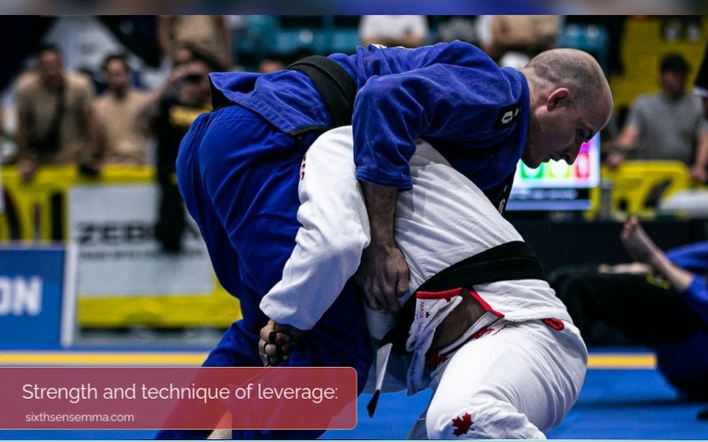
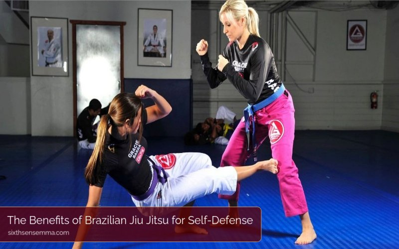
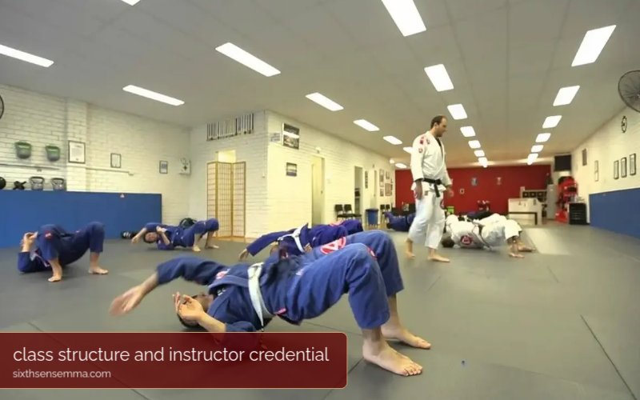

Why Brazilian Jiu Jitsu Classes Are Essential for Self-Defense and Fitness

The Brazilian Jiu Jitsu classes are the most important exercises that aim to provide both the self-defense and fitness means. This indoor sport helps the person by demonstrating the effective methods of self-defense against larger and stronger opponents without the use of force but with technique only. In addition, BJJ is a sport that will bring you to a better shape and health you have ever had. This kind of sport requires physical output like strength, flexibility, and cardio exercise which then trains the mind and body to be disciplined and resilient.
Brazilian Jiu Jitsu (BJJ) training includes confidence and strength building or even a full-length program that will help you build up skills you can use almost every time during the day, so a course of that nature can really influence your being to an unnoticeable degree. Classes of Brazilian Jiu Jitsu around me are a unique mix of the self-defense education and physical fitness that can indeed make your life.
What Is Brazilian Jiu Jitsu?
Brazilian Jiu Jitsu (BJJ) is a present martial art that likes to wrestle and ground fight in a technologically advanced way. It was created in Brazil in the early 20th century and is built on the foundation of traditional Japanese Jiu-Jitsu and judo.
The main point behind BJJ is that the smaller, weaker person can protect himself from a bigger opponent by using the appropriate technique and leverage, primarily by means of submission holds, positional control, and joint locks. [It seems like this is a faulty statement and that the martial art is not in the present tense?
The Main Ideas of Brazilian Jiu Jitsu:

Strength and technique of leverage:
BJJ trains fighters in the utilization of their body weight and leverage to control their opponents so that even individuals who are not as strong as their opponents can subdue them through cleverness rather than force.
Ground Battles:
BJJ is not like most striking martial arts where ground fighting is barely taught. It focuses more on techniques that are perfect for ground fighting. Learners will be instructed to take the fight to the ground where they can use their bodies to immobilize their opponent.
Finishes:
The use of submission techniques, such as joint locks and chokeholds is symbolic of BJJ. Women more often yield in such situations. Her opponent is asked to let go of the hold which is a way of telling her that she could get hurt and thus proceeds with the tapping principle.
The Order by Position:
BJJ emphasizes getting top positions, for example side control, mount, and back control, over your opponent. Each position provides different tactical advantages for both attack and defense.
Drills and Sparring:
One of the most important activities to get those skills is learning and practicing those techniques of sparring and drilling. In fact, the term “rolling” is predominantly used to denote the process of mutual learning, which lays the foundations of BJJ and also helps the students in recognizing timing, distance, and strategy.
Belts and Ranking System:
BJJ uses a system called belt ranking which is used to assess the level of progression of the practitioners and the light (white, blue, purple, brown, and black) as well as the development of the skill. Mastering the art of the sport is another requirement for the promotion of a belt.
The society and the sport:
BJJ is now an established competitive sport with a large number of competitions around the world, with great events like the World Jiu-Jitsu Championship and the Abu Dhabi Combat Club (ADCC) tournaments. The social aspect of BJJ is important as through the hard trainings the practitioners often create special connections with each other.
Benefits of Practicing Brazilian Jiu Jitsu:
Self-Defense:
Practicing Brazilian Jiu Jitsu provides the individuals the necessary techniques to protect themselves in real-life-threatening situations and to handle it when a stronger opponent takes control over them.
Physical Fitness:
Improving overall strength, flexibility, and cardiovascular well-being to beat stress and heart blockage, it becomes the main function of Brazilian Jiu-Jitsu.
Mental Discipline:
Jiu-Jitsu training improves the character of a person, in addition to his brainpower including discipline, focus, and problem solving.
Stress Relief:
Besides mental satisfaction, the joy of winning helps to relax the body, which is good for the body, and there is nothing like a sport that gives us the feeling that we are better to enjoy good mental health. Moreover, a physical exercise like BJJ helps reduce body tension and improve mental well-being

The Benefits of Brazilian Jiu Jitsu for Self-Defense
Practical Self-Defense Techniques:
One of the most compelling motives for taking up a Brazilian Jiu Jitsu class is self-defense. BJJ teaches techniques that a smaller, weaker person can use to defend themselves against a bigger opponent.
With numerous joint locks and chokeholds, learners are able to dominate their rivals on the ground, which makes it a highly efficient self-defense plan.
Situational Awareness:
BJJ practice serves as the booster of our awareness about the environment around us. Trainees are given the tools to predict the movement of the opponent and act accordingly, which boosts situations’ scan facility that in turn will help them to avoid conflicts at all times.
Conflict Resolution:
Besides the martial techniques, BJJ is also a great mindset practice with the self-control and conflict resolution focus. The participants are trained to remain calm in difficult situations and to cool down the anger before they get out of hand.
The Fitness Benefits of Brazilian Jiu Jitsu
Full-Body Workout:
Brazilian Jiu Jitsu is a full-body workout that, with time and right execution teaches you strength, and endurance, flexibility, and coordination. The diverse movements involved in BJJ engage various muscle groups, providing a comprehensive fitness regimen that targets both upper and lower body.
Cardiovascular Improvement:
Classes often involve high-intensity drills that elevate the heart rate, improving cardiovascular health. Regular participation in BJJ is most likely to result in a decrease of your weight and becoming more skilful in sports, in general.
Mental Health Benefits:
Regular physical activity through participation in BJJ may trigger the release of endorphins that. in turn, reduce anxiety and stress attacks. Among other benefits, training is an effective way to let go of tensions, a cause of sickness, which results in a clearer mind and a happier heart.
Community and Support:
BJJ classes help in creating a strong bond between the students and thus develop a method of cooperating. Working out together in the same class might help you realize the lively energy that can keep you in the workout mode.
Best Brazilian Jiu-Jitsu Classes at Sixth Sense Martial Arts in the USA
If you’re looking for top-notch Brazilian Jiu-Jitsu classes, look no further than Sixth Sense Martial Arts. Our academy offers comprehensive training programs led by skilled instructors passionate about teaching BJJ. Whether you’re a beginner or an experienced practitioner, our classes are tailored to all skill levels and for all ages, including kids, teens, and adults, ensuring a fun and practical training experience.
At Sixth Sense Martial Arts, BJJ is more than just a martial art; it’s a journey of personal growth and community. Our students benefit from rigorous training in a supportive environment, where they learn self-defense, enhance their fitness, and build confidence alongside motivated peers.
Join us today to find out why Sixth Sense Martial Arts is recognized as one of the best Brazilian Jiu-Jitsu classes in the USA. Sign up for a free trial class and discover how our academy is dedicated to helping you achieve your BJJ goals while becoming part of a vibrant community. Let’s elevate your Brazilian Jiu-Jitsu skills together!
How to Choose the Right Brazilian Jiu Jitsu Class

In trying out Brazilian Jiu-Jitsu classes in my area, the following factors should be taken into account:
Instructor Credentials: Thoroughly examine the education, background, experience, and the way they teach of the instructors to ensure the classes they are offering to are worth.
Class Structure: A good program will begin with the basic fundamentals and then gradually move on to harder techniques to help practitioners of all skill levels. The allow way is empty, and that is why they have the underline color of red, thus the request one to try again the content.
Community Environment: Select a place that is new, upholds the atmosphere of always being the best version of ourselves and members who instead of criticizing motivate each other.
Conclusion
Bringing Brazilian Jiu Jitsu into your fitness routine is a great way to learn a variety of self-defense skills, and at the same time, to stay in shape. Besides being physically fit, it will help you develop your mental strength and introduce you to a supportive community. If you are a sports pro or still a total beginner, attend one of these Brazilian Jiu Jitsu lessons that will add to your daily routine and make you live the confident life you want to.
FAQ’S
Typically, the average price of BJJ classes can start at $100 and go to $200 per month per person or based on location and the gym status.
The BJJ fundamentals can be grasped within 6 to 12 months, however, the mastery is achieved usually at least after several years of training.
It is feasible to start one’s technical journey by working out at least two days in the week; nevertheless, an often practice habit leads to a quicker improvement.
There is no age limit in Jiu Jitsu. One can start at any point in time and with time and sincerity will reap the benefits of the game. However seniors will have to grapple with age-related issues.
Even though individuals of varying ages may begin jiu-jitsu, many people start to practice around 13 years old to facilitate the development of physical fitness and skills.
Three sessions a week are a good way to start. Having a routine that allows them time to practice new skills and improve technicality as well as keeping them out of burnout is a great thing.
While video-based self-training can be helpful to the learning process, taking courses from qualified teachers is still the best way to go for the correct technique and safety.
BJJ can be quite taxing on your back if the said skills are not correctly carried out. Overall, a good warm-up, some conditioning, and making sure that the correct technique is applied are ways injury could be minimized.
Ideally, beginners should attend classes three times a week which also makes it possible to rest the other days.
The most successful schedule consists of 3-5 classes each week with a mix of technique, sparring, and conditioning classes.
BJJ is a fight art recognized as both aerobic and anaerobic since it requires unbroken movement and spurts of maximum activity usually in the process of rolling.
Receiving a blue belt through two times a week training usually takes some time, around 1.5 to 3 years, and it depends on the individual’s progress and how dedicated he or she is.
Train with us in Coppell
The first class is free. Shorts, a t-shirt and a water bottle. We lend the rest.
Book a free class